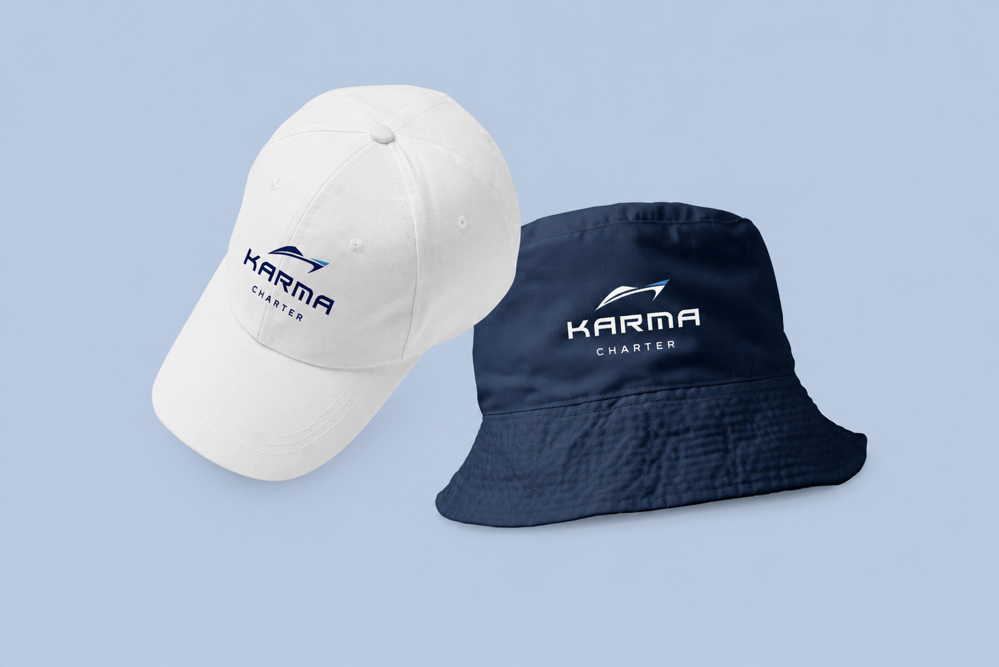
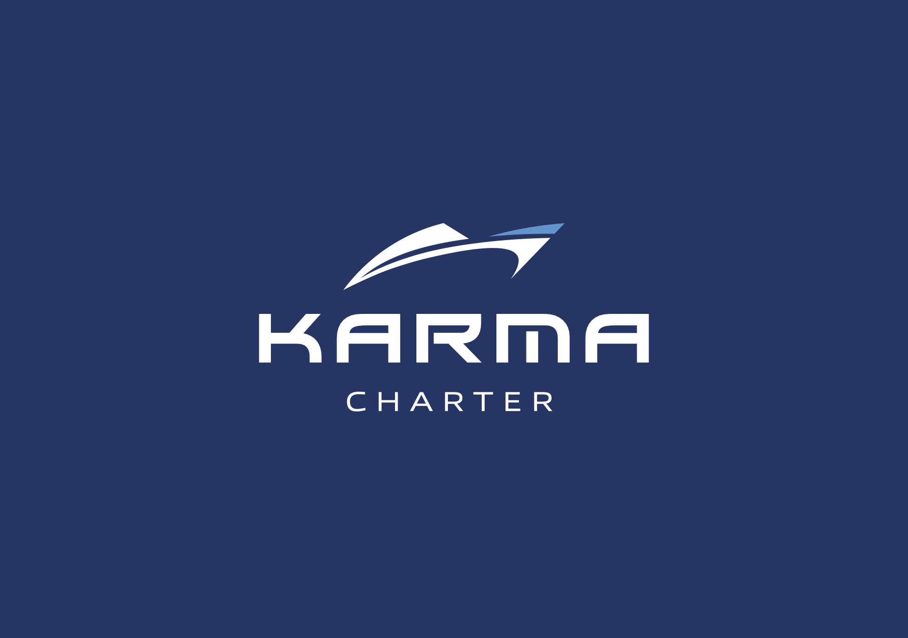
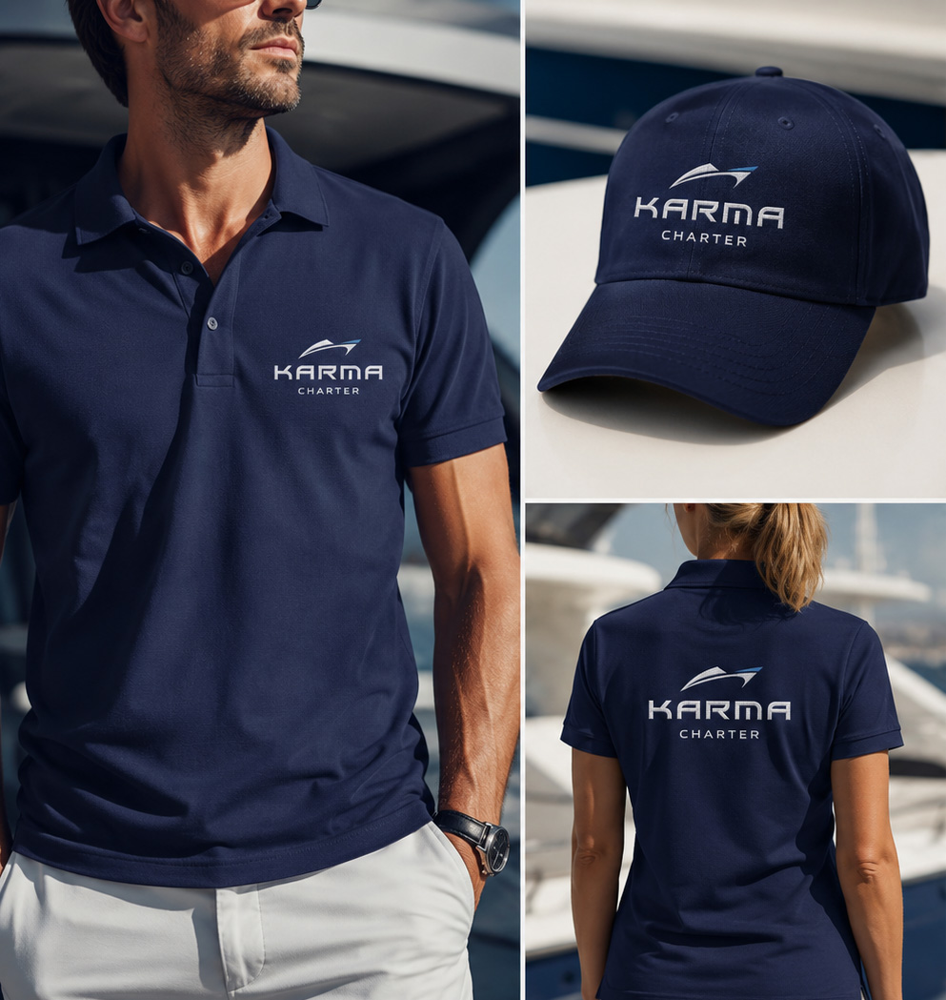
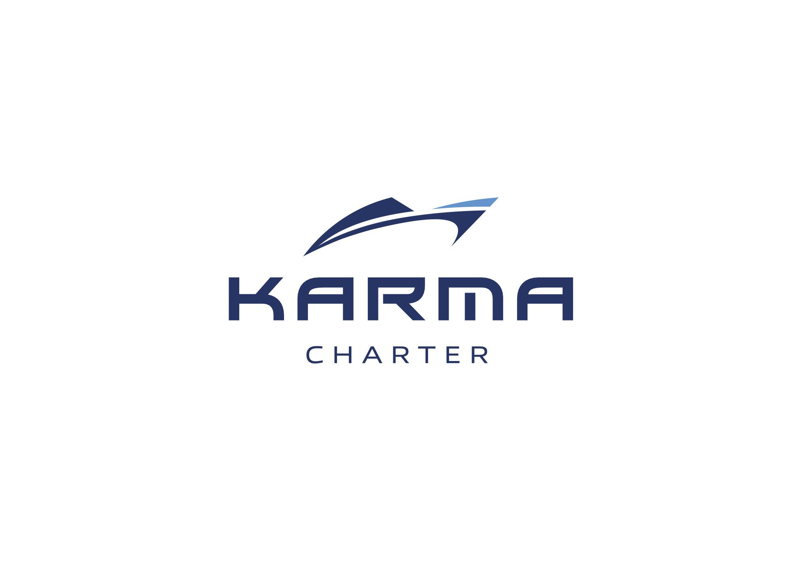

Ruolo
Brand Designer
Karma Charter è un servizio di noleggio di uno yacht per vivere un'esperienza di lusso alla scoperta della Costa Campana e delle isole Partenopee. Karma si è affidata per la creazione di un'identità del brand attraverso il logo: ogni tratto e colore cattura l'essenza dell'avventura marina e dell'eccellenza dei servizi offerti.
karmacharter.com


